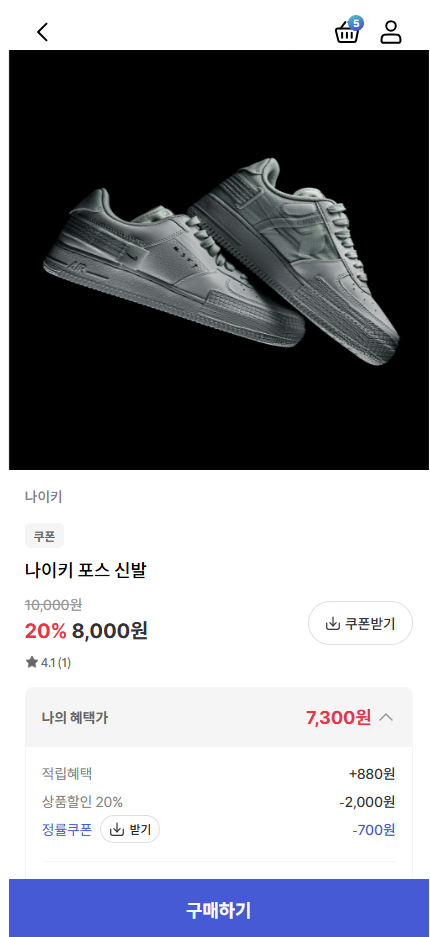
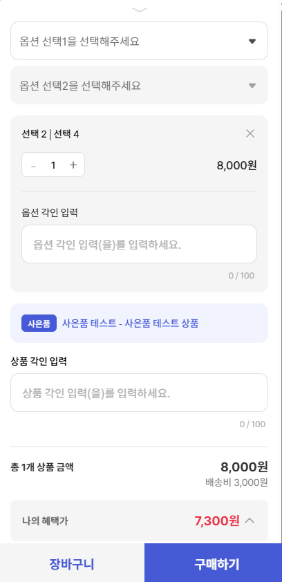
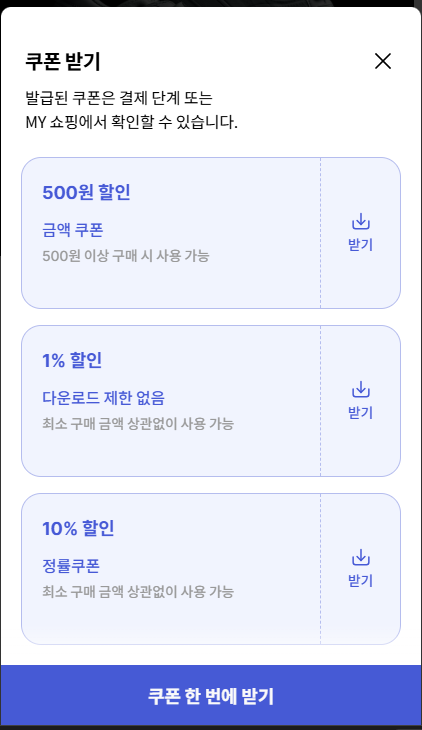
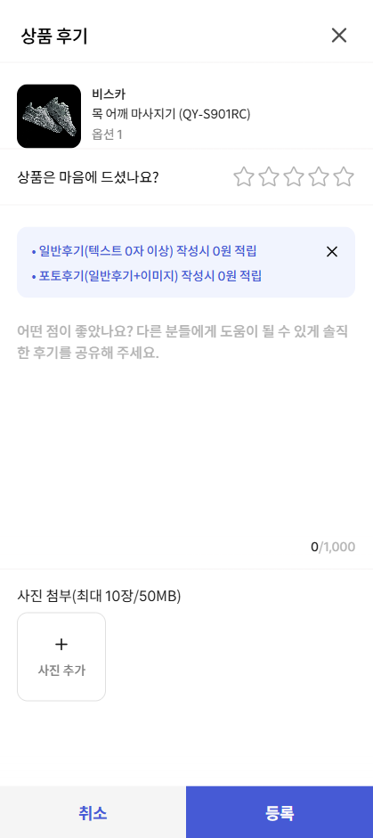

Frontend Developer Portfolio
사용자에게 자연스럽게 읽히는 화면을 설계하고 구현하는 Frontend Developer
React, TypeScript를 활용하여 재사용 가능한 컴포넌트 구조를 설계하고, 상태 관리와 비동기 데이터 흐름을 고려한 안정적인 UI를 구현합니다. 기술 트렌드를 학습하며 더 나은 사용자 경험과 개발 생산성을 추구합니다.
- React & TypeScript
- Reusable Component Design
- Async Data Handling
- State Management (Zustand / React Query)
About
사용자 경험과 구조적 설계를 함께 고민하는
프론트엔드 개발자
저는 React와 Vue 기반의 실무 프로젝트를 경험하며, 화면을 구현하는 데서 그치지 않고 컴포넌트 구조, 상태 흐름, 유지보수성을 함께 고려하는 프론트엔드 개발을 지향해왔습니다.
이커머스, 운영 시스템, 업무용 웹 서비스 등 다양한 프로젝트에서 사용자에게 보이는 UI뿐 아니라 기능 단위의 분리, 재사용 가능한 구조, 데이터 흐름의 명확성을 고민하며 화면을 설계하고 구현해왔습니다.
새로운 환경에 빠르게 적응하며 요구사항을 구현해온 경험을 바탕으로, 앞으로도 더 안정적이고 확장 가능한 프론트엔드 구조를 만드는 개발자로 성장하고자 합니다.
Component Architecture
기능을 역할 단위로 분리하고 재사용 가능한 컴포넌트 구조를 설계합니다.
State & Data Flow
상태 관리와 비동기 데이터 흐름을 고려해 예측 가능한 UI를 구현합니다.
Practical Collaboration
다양한 프로젝트 환경에서 빠르게 적응하고 협업하며 기능을 완성해왔습니다.
Skills
실무 경험을 기반으로 정리한 프론트엔드 역량
기술 나열보다, 실제 프로젝트에서 다뤄온 구조와 역할 중심으로 정리했습니다.
Frontend Architecture
React와 TypeScript를 기반으로 컴포넌트 구조를 설계하고, 확장성과 유지보수를 고려한 UI 아키텍처를 구현합니다.
- React
- TypeScript
- Component Design
- Reusable Structure
State & Data Flow
상태 관리와 비동기 데이터 흐름을 구조적으로 설계하여 예측 가능한 UI와 안정적인 사용자 경험을 구현합니다.
- Zustand
- TanStack Query
- API Integration
- Async Handling
UI Development
사용자 흐름과 정보 구조를 고려하여 반응형 UI를 구현하고, 일관된 디자인 시스템을 유지합니다.
- Tailwind CSS
- Shadcn/ui
- Radix UI
- Responsive Layout
Backend Communication
REST API 기반으로 백엔드와 데이터를 연동하며, 요청/응답 구조를 이해하고 안정적인 데이터 흐름을 구성합니다.
- Axios
- REST API
- Spring Boot
- Node.js
Performance Optimization
불필요한 렌더링을 줄이고 데이터 흐름을 최적화하여 사용자 경험과 성능을 개선합니다.
- Rendering Optimization
- Memoization
- Lazy Loading
- WebView Debugging
Collaboration & Tools
협업 도구와 Git 기반 워크플로우를 활용하여 팀 프로젝트에서 안정적으로 개발을 진행합니다.
- Git / GitHub / GitLab
- Jira / Confluence
- ESLint / Prettier
- MSW
Projects
실무 경험을 중심으로 정리한 주요 프로젝트
최근 프로젝트부터 역할, 기술, 문제 해결 경험을 중심으로 정리했습니다.
Featured Projects
최근 실무 프로젝트 중, 역할과 기여를 가장 잘 보여주는 경험을 중심으로 구성했습니다.
홈닉 이커머스 프로젝트
기존 Shopby 스킨 의존 구조를 제거하고 React · TypeScript 기반으로 홈닉 이커머스 화면을 자체 구축하며, 상품 상세부터 옵션 선택, 리뷰, Q&A, 쿠폰 다운로드까지 서비스 오픈에 필요한 핵심 구매 경험을 구현했습니다.
담당 역할
프론트엔드 개발자로 참여하여 Shopby 의존 화면을 자체 구조로 전환하고, 상품 상세 페이지 및 구매 흐름 전반의 UI와 상태 로직을 설계·구현했습니다.
주요 기여
- Shopby API의 트리형 옵션 데이터를 재귀 기반으로 탐색하는 로직을 설계해 옵션 뎁스와 조합 변화에 유연하게 대응
- 옵션 선택 시 하위 옵션, 가격, 재고 상태를 동적으로 계산해 비정상 조합 및 오류 케이스 제거
- TanStack Query와 Infinite Scroll을 적용해 상품 탐색 및 리스트 조회 경험 개선
- 상품 상세, 리뷰, Q&A, 1:1 문의, 쿠폰 다운로드 등 이커머스 핵심 기능 전반 개발 및 서비스 오픈 기여
- iOS Safari 환경에서만 발생한 UI 깨짐 이슈를 브라우저별 렌더링 차이 관점에서 분석하고 원인 기반으로 수정
기술 스택
- React
- TypeScript
- TanStack Query
- Zustand
- Tailwind CSS
- Shadcn/ui
핵심 포인트
가장 복잡했던 옵션 처리 영역에서 단순 반복문 대신 재귀 기반 탐색 구조를 적용해 깊이가 다른 옵션 트리도 안정적으로 처리할 수 있게 만들었습니다. 그 결과 추가 수정 없이 다양한 옵션 조합을 수용할 수 있었고, 사용자 선택에 따라 가격과 재고 상태가 정확하게 반영되는 구매 흐름을 구현했습니다.

Product Detail
Option & Price Flow
Coupon Benefit
Review Experience상품 상세, 옵션 선택, 쿠폰 혜택, 리뷰 확인까지 구매 전환에 영향을 주는 핵심 화면을 중심으로 구현한 작업입니다.
Other Projects
실무 및 학습 과정에서 수행한 프로젝트를 간략히 정리했습니다.
어깨동무 M 위험성평가
건설 현장 작업 전 안전 교육에 활용되는 모바일 기반 위험성평가 시스템 구축 프로젝트로, 협력사 관리자의 작업계획 등록부터 대림 E&C 관리자의 승인, 현장 안전교육 활용까지 이어지는 업무 프로세스를 지원했습니다.
01
프로젝트 개요
건설 현장 안전 관리 업무 프로세스를 모바일 환경에서 처리할 수 있도록 구성된 시스템으로, 작업계획 등록과 승인 흐름에 맞는 화면 구성이 핵심인 프로젝트였습니다.
02
담당 영역
- 협력사 관리자 작업계획 등록 화면 개발 참여
- 위험성 평가 프로세스 흐름에 따른 모바일 화면 UI 구성
- 모바일 환경 대응 레이아웃 및 사용자 입력 폼 구현
- 작업계획 → 승인 → 안전교육 활용 흐름의 화면 데이터 연동 작업
- 기존 시스템 구조 파악 후 기능 개발 참여
03
기여 및 경험
- 건설 현장 안전 관리 업무 프로세스 기반 모바일 시스템 개발 경험
- 제한된 일정 환경에서 Vue2 기반 레거시 프로젝트 구조에 적응한 경험
- 업무 프로세스에 맞는 입력/승인 중심 UI 설계에 참여
- 기존 코드베이스 분석 후 기능 추가 개발을 수행한 경험
MES 시스템 운영 및 개발
제조 MES 시스템 운영 및 고도화 개발 프로젝트로, 생산, 검사, 설비, 품질 관리 업무를 지원하는 시스템의 화면 개발, 리포트(OZ) 개발, 데이터 처리 로직 개선을 담당했습니다.
01
프로젝트 개요
생산, 품질, 설비 관리 등 제조 도메인 전반을 지원하는 업무 시스템에서 운영 이슈 대응과 신규 기능 개발, 리포트 고도화, 데이터 처리 로직 개선을 함께 수행한 장기 프로젝트입니다.
02
주요 기여
- React 기반 MES 커스텀 프레임워크로 업무 화면 개발 및 기능 개선
- 관리자 VOC 화면 고도화, 파일 업로드, 정의서 관리 기능 개발
- 완제품 체크 리포트 및 내재화 효소 MES 리포트의 OZ 양식 설계와 개발
- 생산지침서 관리 화면 상태 관리 오류 분석 및 구조 수정
- 수입검사 결과 처리 로직, Lot별 사용가능 제품 조회, 기록서 완료승인 화면 등 업무 로직 개선
- Excel 업로드 기반 계측기 검교정 일괄 등록 기능 구현
03
성과 및 경험
- MES 업무 리포트 자동화로 수기 관리 감소에 기여
- 업무 로직 오류 원인 분석과 구조 개선으로 시스템 안정성 향상
- Excel 업로드 기능 도입으로 대량 데이터 처리 효율 개선
- 관리자 화면 기능 고도화를 통해 운영 편의성 증대
- 제조 MES 도메인 기반의 화면 개발과 운영 경험 확보